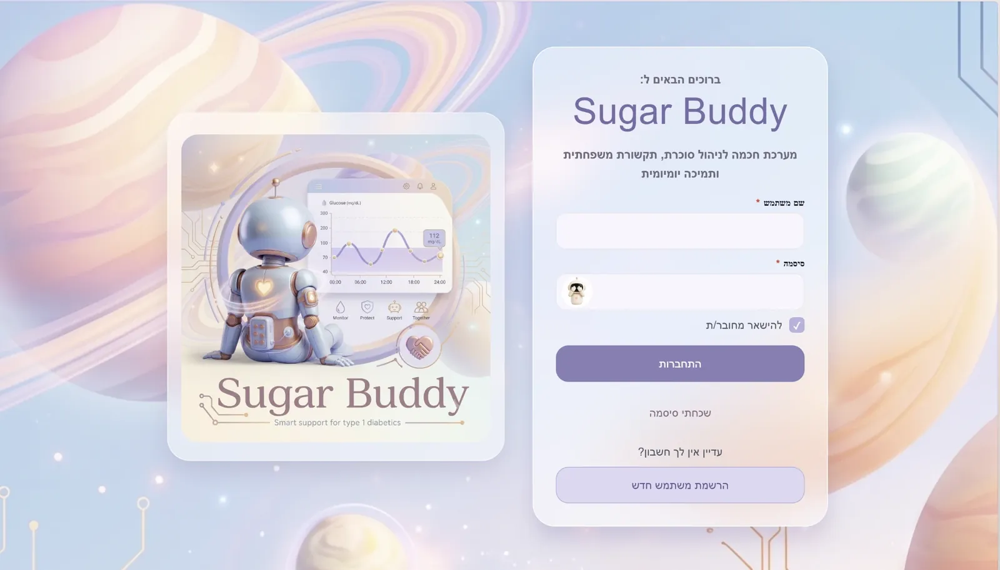

SugarBuddy
When a teen's glucose drops or spikes, parents get an alarm and nothing else. SugarBuddy turns that alarm into a short check-in with the teen, an AI explanation of what probably happened, and a calm next step for the parent.
- My role
- Most of the build: 417 of the team's 532 commits, across the backend, the app, the AI agent and the tests. I also ran the deployment, first on Azure and then on a free setup I moved it to myself.
- Team
- Four students, Software Engineering for ML course, Technion
- When
- 2026
- Stack
- Python, FastAPI, MongoDB, React Native (Expo), WebSockets, Docker, GitHub Actions, Azure, Netlify, OpenRouter

The live app's sign-in screen (the app is in Hebrew).
Three users, one stressful moment
A teen with Type 1 diabetes wears a sensor that reads glucose all day. When the number goes wrong, the parent gets an alarm with no context. The usual result is worry, and often an argument.
The teen
Wants to deal with it fast and not be interrogated. Answers a short check-in, gets a daily message, and has a forum of peers.
The parent
Wants to know what happened and what to say. Gets a summary with likely causes, and sends a recommendation the AI rewrites in a tone that lands with a teenager.
The family
A grandparent or sibling joins with a family code and gets only the alerts the parent chooses to share.
The goal
Turn every glucose event into a short, calm loop that closes, and help the family learn from it over time.
The product is built around one loop that always closes.
What we chose, and what it cost
A structured check-in, not an open chat
- Chose
- About 10 quick questions on food, insulin and activity. The agent may add at most one follow-up.
- Gave up
- The depth of a free conversation.
- Why
- A teen right after a low won't type paragraphs. Short, structured answers get finished, and they give the AI clean inputs.
The parent stays in the loop
- Chose
- The AI explains; the parent decides. The AI only rewrites the parent's recommendation into a tone that works for a teenager.
- Gave up
- A fully automatic "here's what to do" message.
- Why
- Medical and family authority belongs to the parent. The real pain was the tone of the conversation, so that's where the AI helps.
Hard safety rules over model judgment
- Chose
- The AI never gives insulin amounts, and anything life-threatening always reaches the parent, even if the teen asks to hide it.
- Gave up
- Some of the teen's privacy in an emergency.
- Why
- In a health app for minors, a wrong answer costs far more than a missing one.
Show nothing rather than something wrong
- Chose
- Every AI answer is checked. In the wrong language or unsafe, it retries once and then shows nothing. If the AI is down, the rest of the app keeps working.
- Gave up
- Always having an answer on screen.
- Why
- Trust is the product. One nonsense answer to a worried parent would undo it.
A real system, not a prototype
One codebase for web, iPhone and Android, a backend that owns all the data, a background service that watches each teen's sensor, and an AI agent.
Guardrails on the AI
Teen-written text is screened for tricks like "ignore your instructions" in English and Hebrew, with over 20 tested attack cases.
About 735 automated tests
Unit, integration, system, security and stress tests, run on every change.
Deploys that undo themselves
A new version goes live only after the tests pass. If it doesn't come up healthy, the pipeline rolls back to the last good version on its own.
A bug that froze everyone
One slow AI call could freeze the app for every user at once. I made the calls run side by side and added a test that proves it.


Keeping it alive: from Azure to $0
When the cloud budget ran out, the app would have gone dark. A health app is only useful if it's there, so I moved it myself to a setup that costs nothing.
Version 1: Azure
- Everything on one Azure virtual machine, in Docker
- Small AI models on the same machine, which struggled with Hebrew
- Live only while the paid machine was on
Version 2: free
- The app on Netlify, the backend on a free cloud server
- The AI through OpenRouter's free models, much larger than before, which also fixed the broken Hebrew
- $0 a month, and live all the time
What shipped
A working product for three kinds of users, running on demo families with a simulated glucose feed. No real patient data was used.